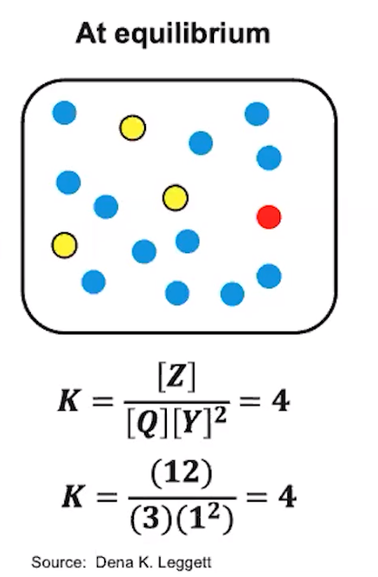
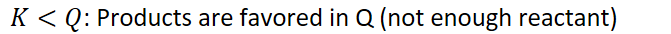
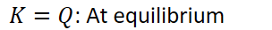
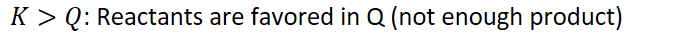

Particle diagram representations of systems at equilibrium
Calculate equilibrium constant for the given equilibrium particle diagram:
{width="2.8854166666666665in" height="4.40625in"}
Compare K at equilibrium with reaction quotient Q of other diagrams
{width="6.989583333333333in" height="0.3541666666666667in"}
{width="3.1666666666666665in" height="0.3541666666666667in"}
{width="7.041666666666667in" height="0.3541666666666667in"}
Make a chart with particle diagrams for organization